16 кадров сцены: новый / прежний материал при одинаковой камере и свете. 4 отдельных образца материала. Software Vulkan/Forward+; целевой GPU и полная художественная приёмка VS1 остаются открытыми.
low · sleeping
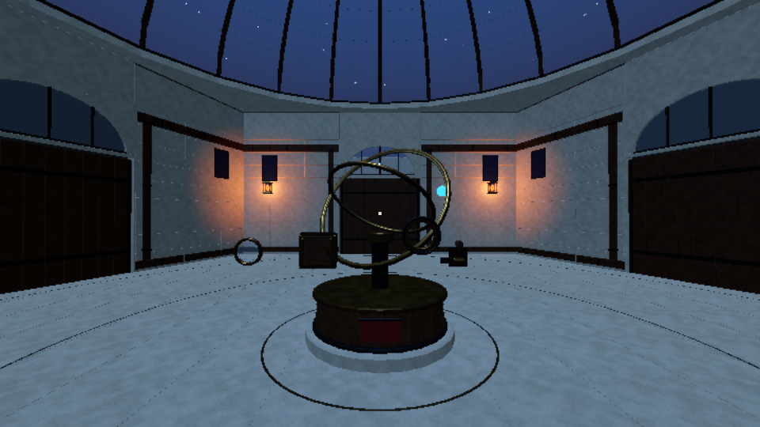
Новый MAT-002 · sleeping_polished_low.png
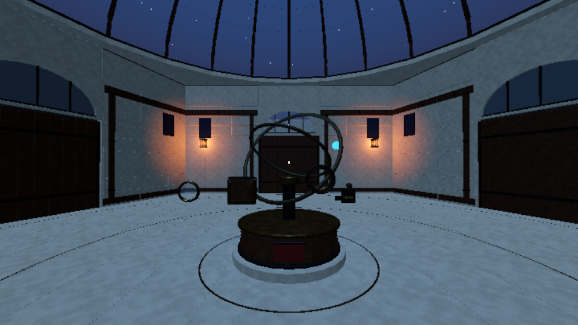
Прежний материал · sleeping_previous_low.png
low · oblique
Новый MAT-002 · oblique_polished_low.pngПрежний материал · oblique_previous_low.png
low · panel
Новый MAT-002 · panel_polished_low.png
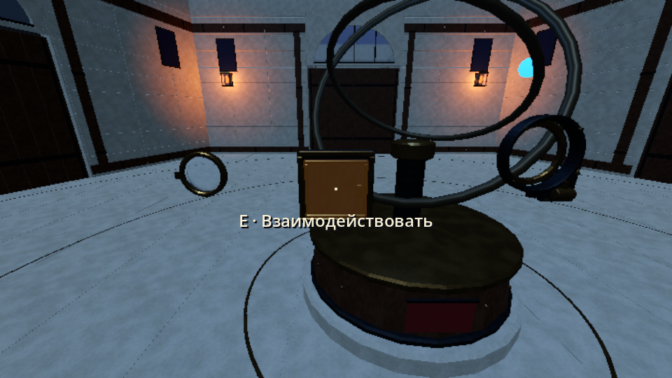
Прежний материал · panel_previous_low.png
low · awakened
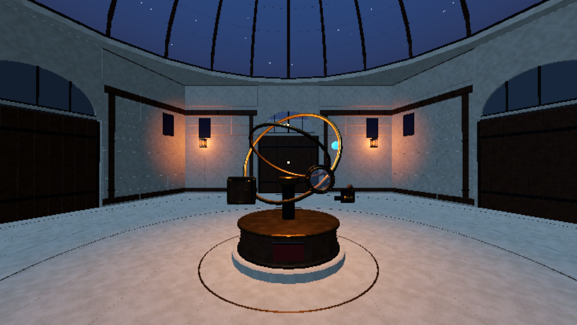
Новый MAT-002 · awakened_polished_low.pngПрежний материал · awakened_previous_low.png
medium · sleeping
Новый MAT-002 · sleeping_polished_medium.png
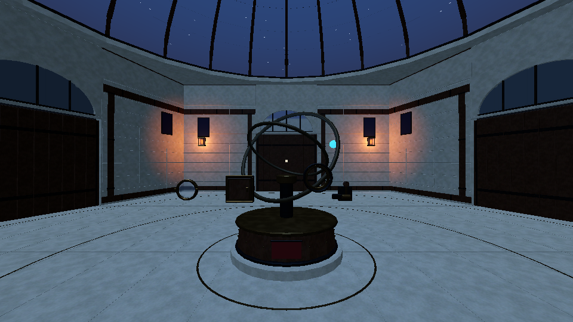
Прежний материал · sleeping_previous_medium.png
medium · oblique
Новый MAT-002 · oblique_polished_medium.png
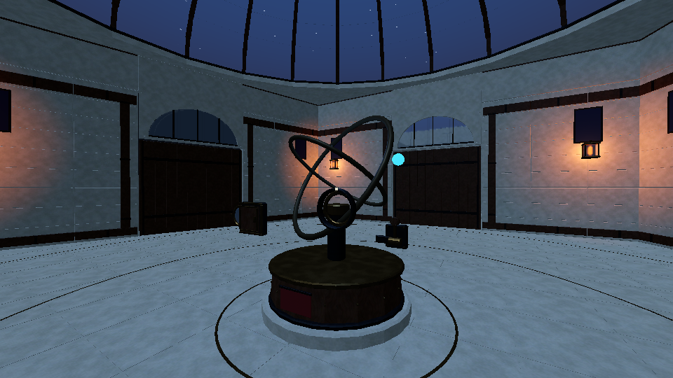
Прежний материал · oblique_previous_medium.png
medium · panel
Новый MAT-002 · panel_polished_medium.pngПрежний материал · panel_previous_medium.png
medium · awakened
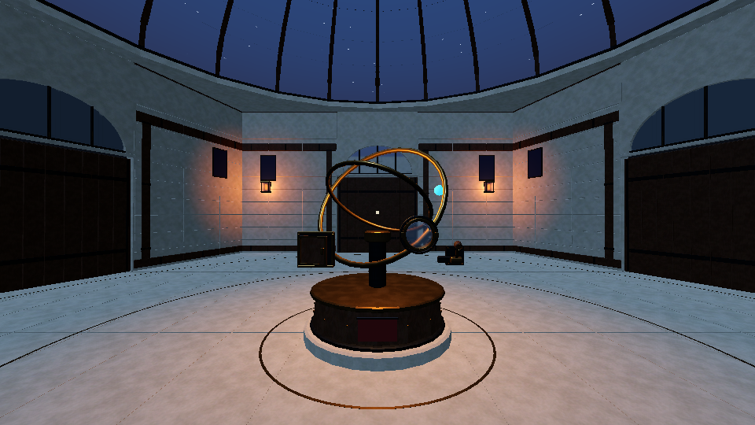
Новый MAT-002 · awakened_polished_medium.pngПрежний материал · awakened_previous_medium.png
Изолированные образцы · Medium
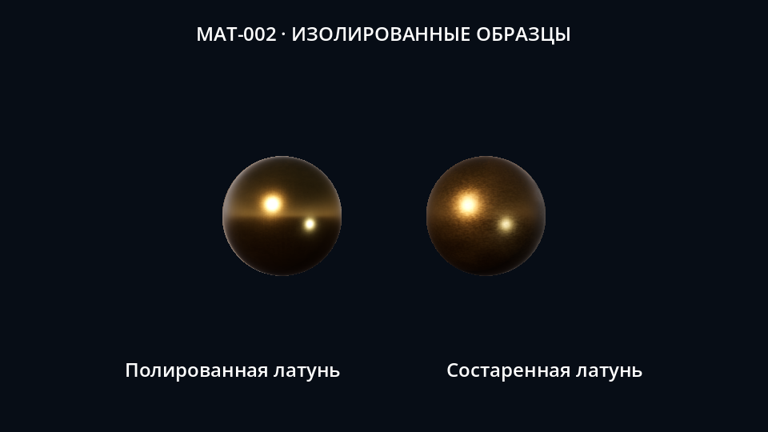
specimen_neutral_medium.png · слева MAT-002, справа aged brass
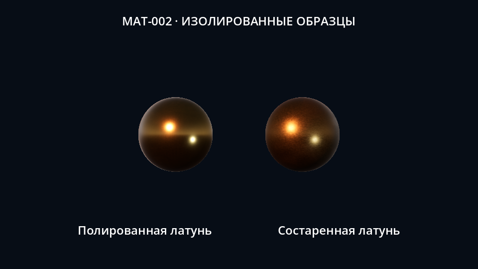
specimen_warm_medium.png · слева MAT-002, справа aged brass
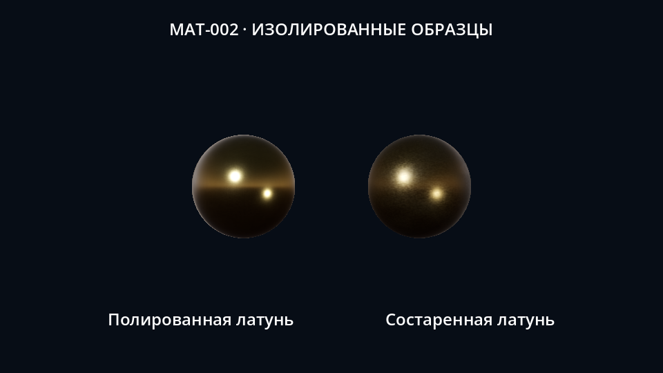
specimen_cool_medium.png · слева MAT-002, справа aged brass
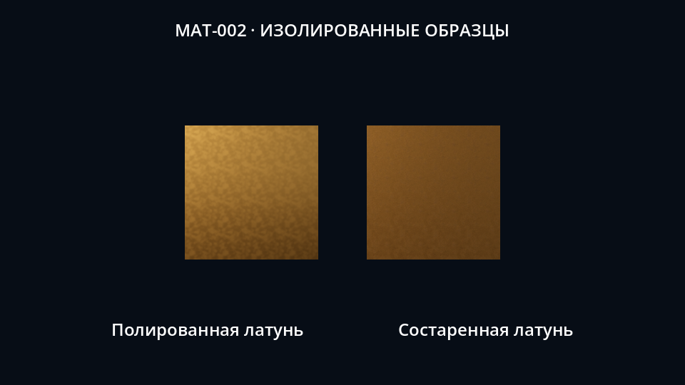
specimen_tiles_medium.png · слева MAT-002, справа aged brass